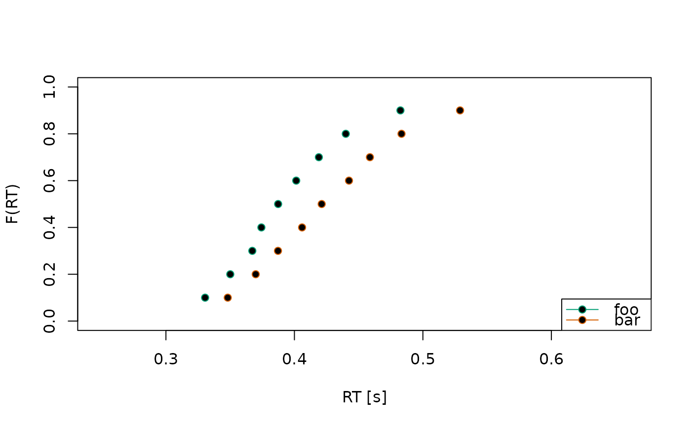

Set default graphical parameters for plotting in dRiftDM
Source:R/plotting.R
set_default_arguments.RdThis function sets/updates graphical parameters (passed through ... by
plot.*() methods of dRiftDM) and handles default settings.
It supports arguments relevant to
graphics::plot(), graphics::points(), graphics::legend(), and
graphics::arrows(), allowing users fine-grained control over plotting
while avoiding argument clashes. This is an internal function, so users
won't call it directly. However, the Details below list all optional
arguments that users can provide when calling the plot.* methods
Value
A list with all updated graphical parameters, ready to be passed to plotting functions. (done internally, not by the user)
Details
The following list shows possible arguments and default values for...
shades, lines, points:
obs.pch: plotting symbol for points of observed data (default:19)obs.pt.bg: background color for points (default:NA)pred.lty: line type for lines of predicted data (default:1)pred.lwd: line width for lines (default:1)alpha: alpha transparency for shaded prediction intervals (default:0.2)b.lty: line type for decision boundaries (default:1)b.lwd: line width for decision boundaries (default:1)
text and scaling:
cex.axis,cex.lab,cex.main,cex.pt,cex.legend: text and point scaling factors (default:1)main: plot title (default: NULL, withidappended if applicable)family: font family (default: empty string)
legend:
legend: legend labels (default:leg)legend.pos: position of the primary legend (default:"bottomright", it is also possible to specify a numeric vector forlegend.pos, providing the exact x- and y-position)legend.bg: background color of the legend box (default:"white")bty: box type for the legend (default:"o")box.lwd: border line width of the legend box (default:1)box.col: border color of the legend box (default:"black")box.lty: border line type of the legend box (default:1)lines.legend: optional labels for a separate legend for line types (only relevant forplot.densities(), default:NULL)lines.legend.pos: position of that separate legend (default:"topright", passing a vector with exact x- and y-positions forlines.legendis possible)
error bars:
err.width: width of caps on error bars (default:0.05)err.col: color of error bars (default:NULL; resolved to line/point colors, black or gray, depending on the plot type; recycled across conditions)err.eps: threshold under which an error bar is treated as too small to display (default:0.1%of the y-axis range)
observed histogram and KDE (for plot of RT distributions/densities):
obs.hist.col: fill color for histograms (default:"gray20")obs.kde.col: color of KDE lines (default:"black")obs.kde.lty: line type of KDE lines (default:2)obs.kde.lwd: line width of KDE lines (default:1)
ETC.:
horiz.col: color of a horizontal axis line at y = 0 (default:"gray")horiz.lwd: color of a horizontal axis line at y = 0 (default:1)
Examples
# This is not an example of calling set_default_arguments() directly
# (because it is an internal function), but it illustrates how user-supplied
# plotting arguments are processed via this helper.
some_data <- ulrich_flanker_data
some_stats <- calc_stats(some_data, type = "quantiles")
# See also ?plot.quantiles for more detail
plot(
some_stats,
obs.pch = 21, # optional argument 1: point type
obs.pt.bg = "black", # optional argument 2: point background
legend = c("foo", "bar") # optional argument 3: custom legend labels
)
#> Aggregating across ID

# for a full list of optional arguments, see the Details above